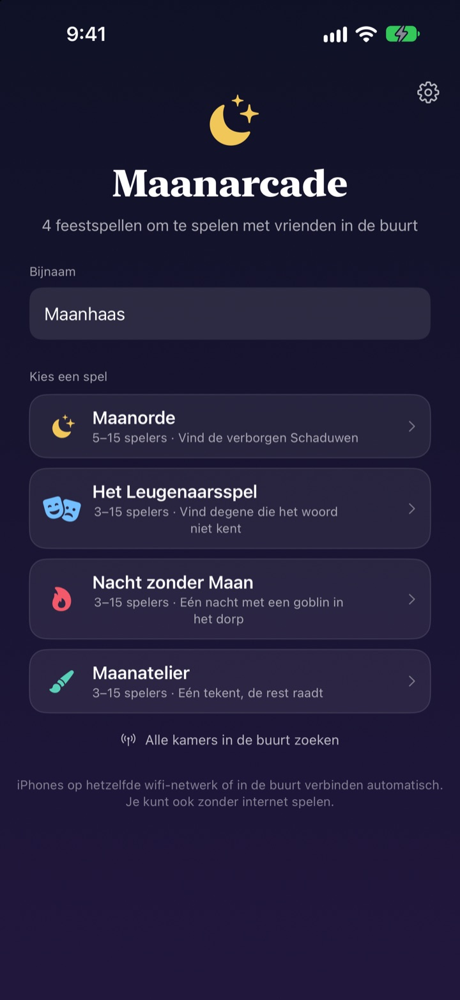
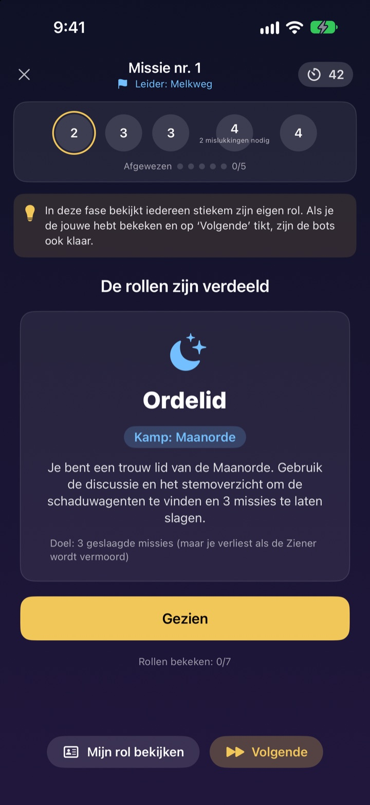
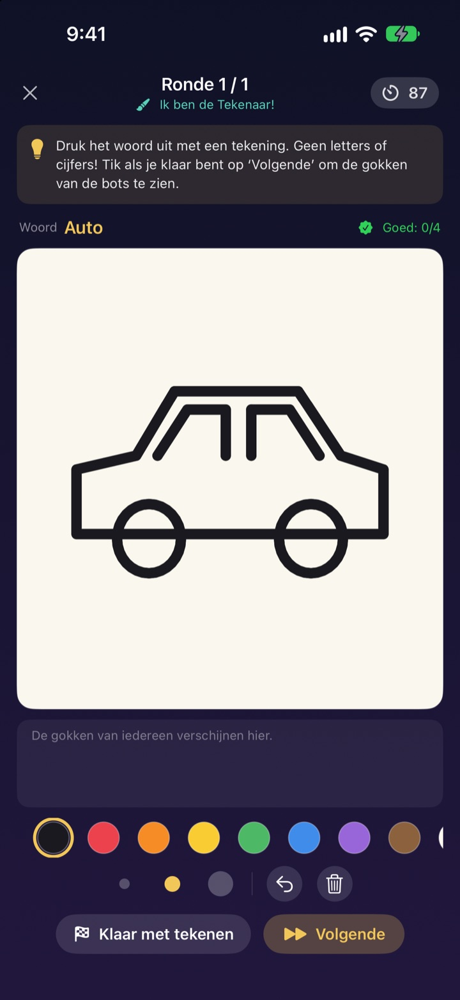
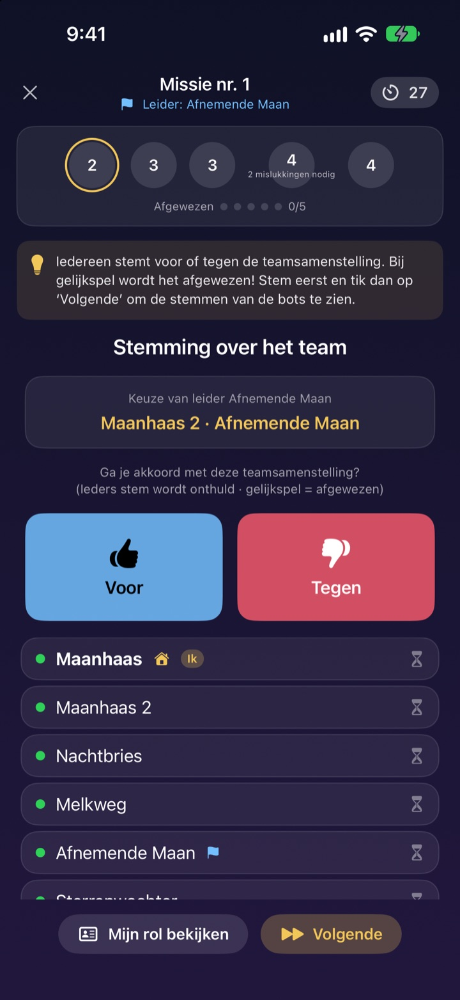

Is iedereen er?
Pak je iPhone.
Eén persoon maakt een kamer en iedereen in de buurt doet binnen seconden mee. Rollen en geheime woorden staan alleen op je eigen scherm: geen kaartjes en niemand die aan de kant moet zitten als spelleider.
Alle spellen gratis. Geen account, geen internet.

Speel een ronde Leugenaarsspel
Stel je vijf iPhones op tafel voor en tik ze één voor één aan om te kijken. Maar één speler kent het woord niet. Je kunt het scherm ook rond laten gaan.
Iedereen is er, maar wat gaan we spelen?
Spelletjesavond, weekendje weg, kerst met de familie. Voor een spel met geheime rollen moet iemand buiten spel blijven om te leiden, en opgevouwen briefjes blijven nooit echt geheim. In een vakantiehuisje met slechte wifi vallen online spellen ook af. Bij Maanarcade regelen de iPhones de spelleiding, het verdelen van rollen en de verbinding.
Jouw rol staat alleen op jouw scherm
Bij de start krijgt elke iPhone zijn eigen rol of woord. Geen kaartjes uitdelen, geen ‘iedereen ogen dicht’.
Tijdens het stemmen zie je alleen wie al gestemd heeft. Wie op wie stemde, blijft geheim tot de onthulling.

Vier spellen voor elk gezelschap
In het Leugenaarsspel wint wie het mooist praat, in de Maanorde jagen jullie met missies en stemmingen op de Schaduwen, in Nacht zonder Maan zoeken jullie in één nacht de Goblin, en in het Maanatelier tekent één speler en raadt de rest.
Maanorde vanaf 5 spelers, de rest vanaf 3, allemaal tot 15.

Nieuw spel? In een paar minuten geleerd
Elk spel heeft een modus ‘Zo speel je’, waarin je stap voor stap een ronde met bots speelt. Lees de tip bovenaan en tik op Volgende.
Sluit de app of valt de verbinding weg, tik dan op Doorgaan op het beginscherm en je zit weer in dezelfde ronde.

In drie stappen aan de slag
- 1
Bijnaam en spel kiezen
Iedereen opent de app, vult een bijnaam in en kiest het spel.
- 2
Kamer maken of meedoen
Eén persoon maakt een kamer, de rest vindt hem via Kamers in de buurt zoeken.
- 3
De host start
Is iedereen binnen, dan tikt de host op Spel starten. De app doet de rest.
De vier spellen
- Het Leugenaarsspel · 3–15 spelers
- Iedereen krijgt hetzelfde woord, op één na. Om de beurt beschrijf je het, daarna stemmen jullie op de leugenaar. Raadt de betrapte leugenaar het woord, dan wint die toch.
- Maanorde · 5–15 spelers
- Ontmasker de Schaduwen die zich in de Orde verschuilen. De leider kiest een missieteam, iedereen stemt voor of tegen en het team speelt in het geheim succes of mislukking. Wie als eerste drie missies binnenhaalt, wint.
- Nacht zonder Maan · 3–15 spelers
- Eén nacht, en er schuilt een Goblin in het dorp. ’s Nachts doen de Sjamaan, de Nachtdief en de Grappenmaker in het geheim hun ding. Bij zonsopgang wordt er overlegd en is er maar één stemming om de Goblin te vinden.
- Maanatelier · 3–15 spelers
- Eén speler tekent het woord, de rest raadt in de chat. Hoe sneller je het raadt, hoe meer punten, en de tekenaar scoort bij elk goed antwoord.
Elk spel kun je eerst alleen met bots uitproberen in de modus ‘Zo speel je’.
Veelgestelde vragen
Ik zie de kamer niet.
Controleer of host en spelers op hetzelfde wifinetwerk zitten of dicht bij elkaar zijn. Maanarcade moet aanstaan bij Instellingen ▸ Privacy en beveiliging ▸ Lokaal netwerk om apparaten in de buurt te vinden. Met wifi én Bluetooth aan is de verbinding het stabielst.
Moet ik toegang tot het lokale netwerk toestaan?
Ja, zo vindt de app iPhones in de buurt en maakt verbinding. Heb je ‘Sta niet toe’ getikt, zet het dan weer aan bij Instellingen ▸ Privacy en beveiliging ▸ Lokaal netwerk.
Mijn verbinding viel weg midden in het spel.
Open de app opnieuw en tik op Doorgaan op het beginscherm om terug te keren naar dezelfde kamer en ronde. Je rol en score blijven bewaard. Lukt het een tijd niet, doe dan opnieuw mee via de lijst met kamers.
Iemand reageert niet en het spel hangt.
De host kan een speler die niet reageert altijd verwijderen; het spel rekent opnieuw met de overgebleven spelers en gaat verder. In de GM-hostmodus kun je ook een vastgelopen stap overslaan.
Hoeveel spelers zijn er nodig?
Maanorde heeft er 5 nodig. Het Leugenaarsspel, Nacht zonder Maan en het Maanatelier beginnen bij 3. Alle spellen kunnen tot 15. Te weinig mensen? Leer de regels met bots in ‘Zo speel je’.
Hebben we internet of een account nodig?
Nee. Geen registratie, niet inloggen, geen internet. iPhones in de buurt verbinden rechtstreeks en speldata worden nooit naar een server gestuurd.
Kan ik een spel eerst alleen proberen?
Ja. Kies een spel en daarna ‘Zo speel je (oefenen met bots)’. Er komen bots in de kamer en je speelt stap voor stap een hele ronde.
Hoe meld ik een fout of stuur ik een idee?
Rechtstreeks in de app via Instellingen (het tandwiel) ▸ Ondersteuning, of mail naar het adres hieronder. We reageren zo snel mogelijk.
Fouten, ideeën of iets anders: mail naar mizzking75@gmail.com.